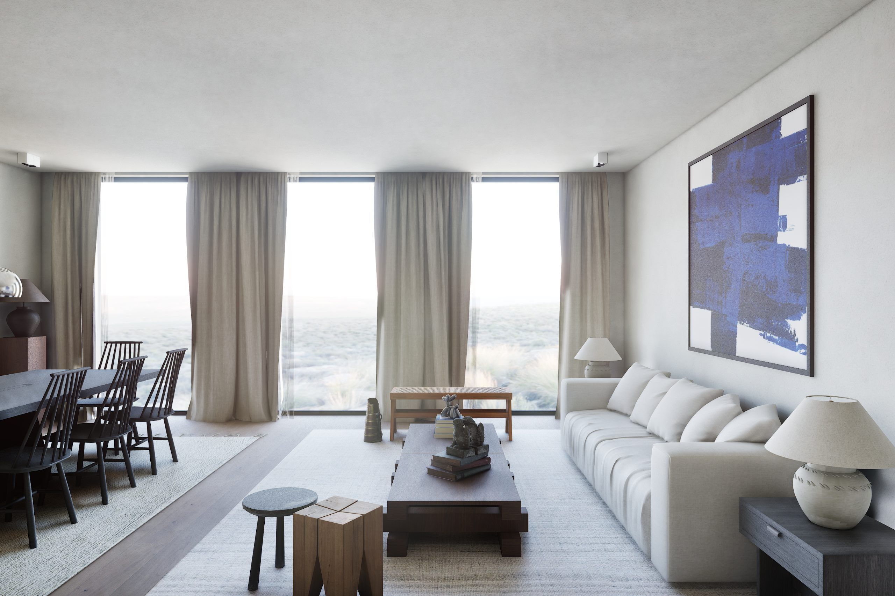
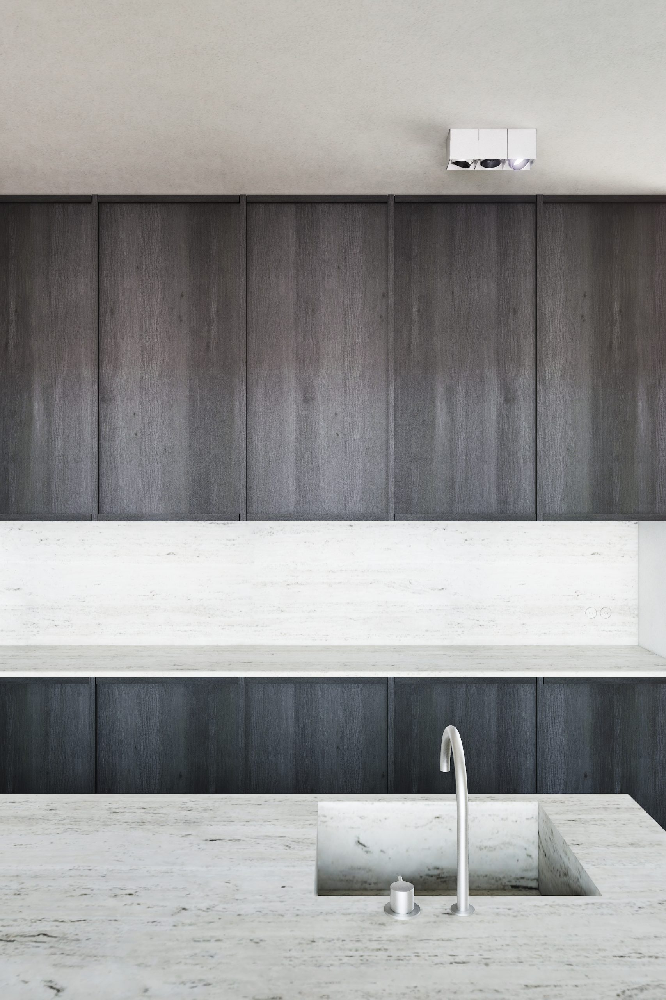
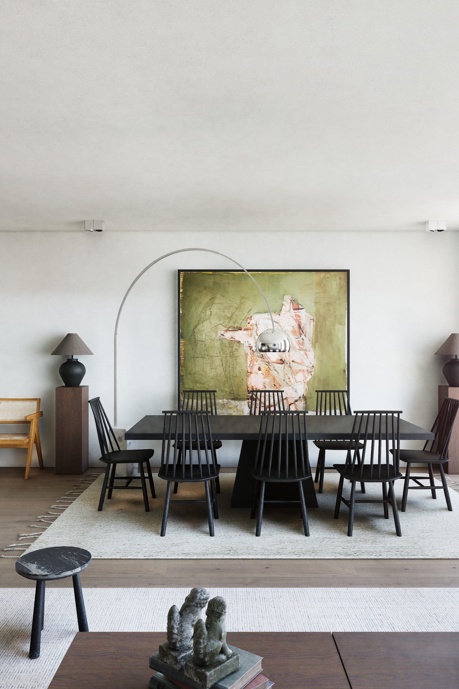
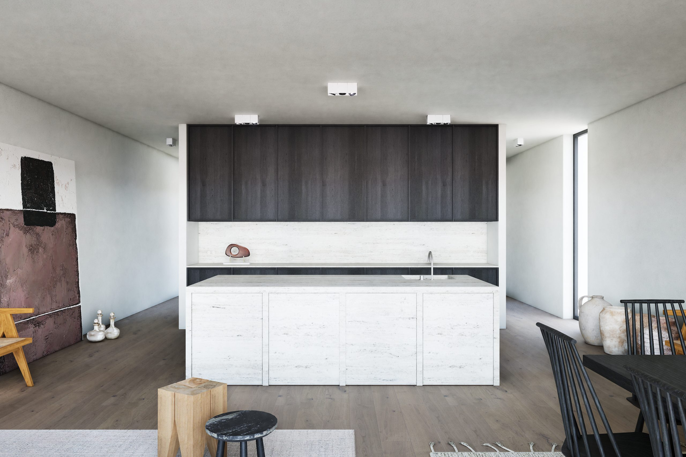
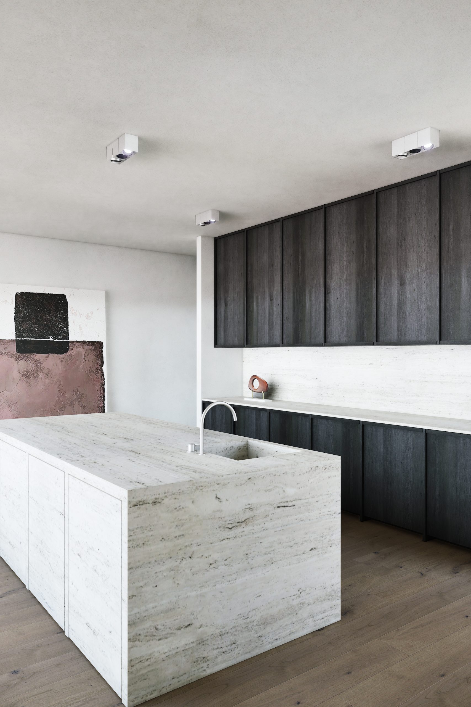
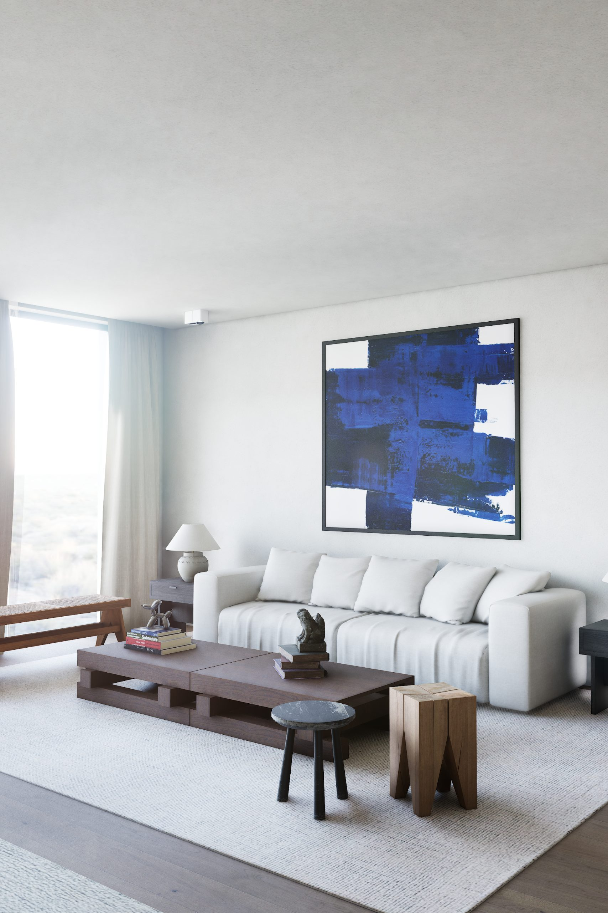
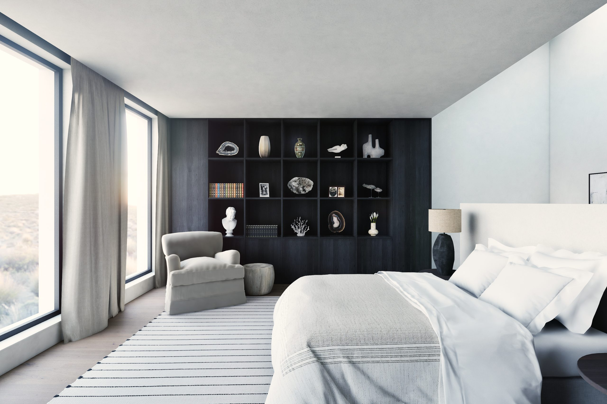
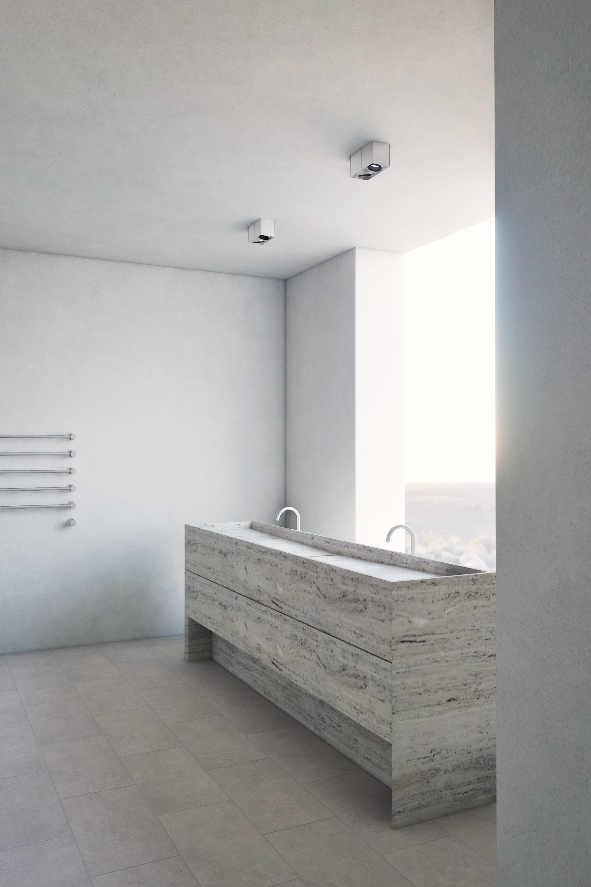
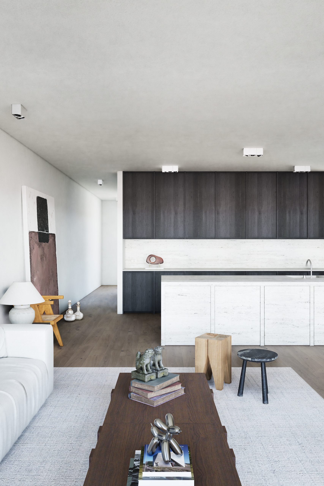

Over het project
Een gezin wilde een woning waarin elke ruimte even rustig aanvoelt, van de inkom tot de badkamer. Het uitgangspunt lag in de ger zelf: de nomadische tent waar alles rond een vast midden gebeurt. Hier is dat midden de leefruimte, met keuken, eettafel en zithoek langs de ramen. De andere ruimtes spreken dezelfde taal.
De keuken staat als een vrijstaand eiland in licht travertijn voor een wand van hoge kasten in donker gerookt eiken. Voorraad en techniek verdwijnen achter die kastenwand. Eettafel en zithoek liggen elk op een eigen wollen tapijt, op één doorlopende eiken vloer, achter linnen gordijnen die het licht verzachten.
Dezelfde materialen lopen door de hele woning. In de inkom staan een bank in donker eiken en een zwart-wit kunstwerk. De slaapkamer krijgt een vitrinekast in donker eiken, de badkamer een wastafelmeubel in travertijn onder een lichtstraat.









Over de materialen
Wanden en plafonds zijn afgewerkt in kalkpleister, licht en mat, met een wolkige textuur die het daglicht zacht verdeelt. De vloer is in brede eiken planken, in een warme grijsbruine tint, en loopt zonder onderbreking door de woning.
Het travertijn is licht en in de lengte gezaagd, zodat de natuurlijke aders als fijne horizontale lijnen over eiland, werkblad en achterwand lopen. Daartegenover staat het gerookte eiken van de hoge kasten: een rustig, bijna zwart vlak dat de keuken verankert. Een gebogen kraan in geborsteld staal is het enige metaal aan het eiland.
Het meubilair spreekt dezelfde taal: een salontafel in massief donker hout, opgebouwd als gestapelde balken, zwarte spijlenstoelen rond een lange donkere tafel, banken en fauteuils in teak met rieten zitting, een kruk uit één stuk ruw hout. Keramiek, oude terracotta kruiken en kunst in diep blauw en mosgroen brengen kleur, zonder het geheel te overstemmen.
Een eigen ruimte in gedachten?